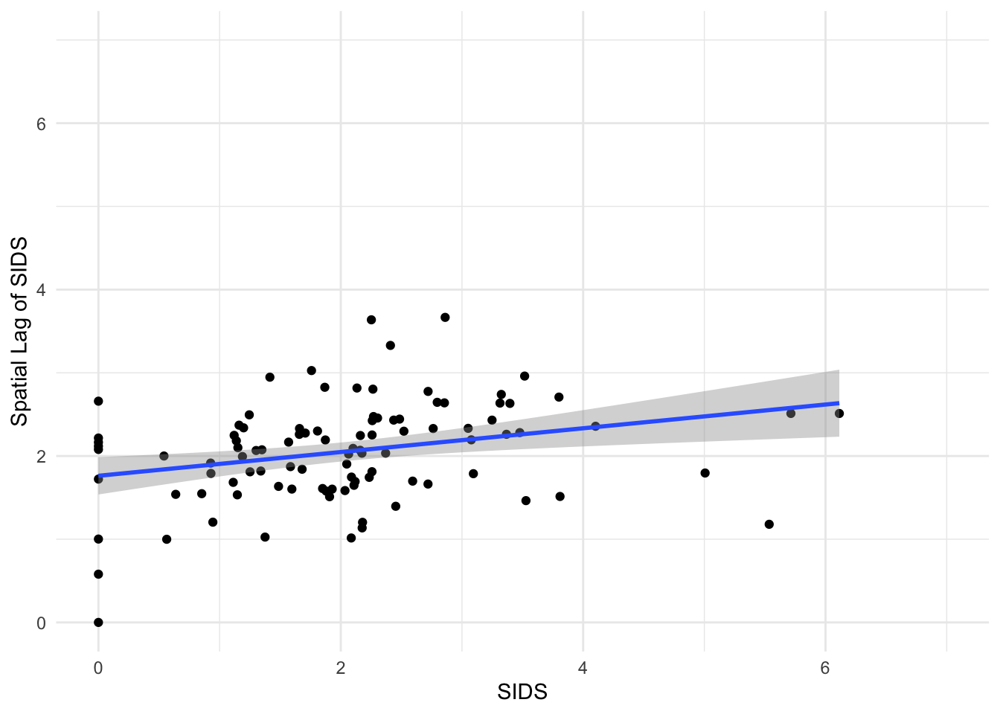

Tuesday, September 26, 2022
Today
- Inferential statistics
How to apply common statistical tests and how to understand their meaning using graphs.
This lesson marks a departure from the earlier lessons. I will continue to teach you how to code, but I will do so in the context of statistical thinking, analysis, and modeling.
I find statistics to be a natural extension to thinking about how the world works but I realize this comes with experience.
The process of drawing conclusions about a population from a sample of data is called inference. Formally referred to as inferential statistics. It is a foundation of data science. Two approaches: frequentist (standard practice) and Bayesian.
Standard practice relies on disproving a research claim that is NOT of interest.
The research claim you want to disprove is called the null hypothesis. For instance, to show that one medical treatment is better than another treatment, you first assume that the two treatments lead to equal survival rates. You then proceed to disprove this null hypothesis with data. Often the other treatment is a placebo (sugar pill).
To show that the climate is getting warmer, you first assume that it is not getting warmer. You then proceed to disprove this hypothesis with data.
Q: What is the difference between the medical treatment example and the climate change example?
One-sample test of the population mean
Oftentimes interest lies in the mean value (from a population of all values) being different than some prescribed value \(M\). So the null hypothesis (what you want to disprove) is that the population mean equals \(M\).
Using textbook notation the test is written as \[ \hbox{H}_0: \mu = M \\ \hbox{H}_A: \mu \neq M \] where H sub naught (\(\hbox{H}_0\)) is the null hypothesis stating that the unknown population mean (\(\mu\)) equals a specific value \(M\) and where H sub A (\(\hbox{H}_A\)) is the alternative hypothesis stating that the unknown population mean does equal \(M\).
For example, given a sample of FSU students where heights are measured in centimeters, you test the hypothesis that the mean height of all students at FSU (the population) is 183 cm (6 feet).
You should always start by plotting the data together with the hypothesis. Here first create a data frame using the vector of heights and number the students from 1 to n using the sequence operator :.
ht <- c(177, 180, 179, 174, 192, 186, 165, 183)
ht.df <- data.frame(Student = 1:length(ht),
Height = ht)Then use ggplot() to make a box plot and add the hypothesized mean as a layer with the geom_hline() function and the data values as layer with the geom_point() function.
library(ggplot2)
ggplot(data = ht.df,
mapping = aes(x = "", y = ht)) +
geom_boxplot() +
geom_point(color = "blue") +
ylab("Height (cm)") + xlab("") +
geom_hline(aes(yintercept = 183), color = "red") +
scale_y_continuous(limits = c(150, 200)) +
theme_minimal()
mean(ht)## [1] 179.5The median height in our sample is less than 180 cm (thick black line) and the hypothesized mean (red line) is within the interquartile range.
You write the test as: \[ \hbox{H}_0: \mu = 183 \\ \hbox{H}_A: \mu \neq 183 \]
You test the hypothesis that the mean height in the population is 183 cm with the t.test() function. The first argument is the data vector (not a data frame) and the second argument is the hypothesized mean (mu =).
t.test(ht,
mu = 183)##
## One Sample t-test
##
## data: ht
## t = -1.2239, df = 7, p-value = 0.2606
## alternative hypothesis: true mean is not equal to 183
## 95 percent confidence interval:
## 172.7376 186.2624
## sample estimates:
## mean of x
## 179.5Where do these values come from and how do you interpret them?
The output includes the \(t\) value (-1.2239). The \(t\) value (or \(t\) statistic) is computed as \[ t = \frac{\bar x - M}{s/\sqrt{n}} \] where \(\bar x\) is the sample mean, \(M\) is the hypothesized value, \(s\) is the standard deviation and \(n\) is the sample size.
In code the \(t\) value is
(mean(ht) - 183) / (sd(ht) / sqrt(length(ht)))## [1] -1.223853The output also includes the degrees of freedom (7). The degrees of freedom on the \(t\) value is the sample size minus one. There are eight student heights (sample size is 8) so df = 7.
The degrees of freedom (dof, df) is a term that indicates the number of values in the calculation of a statistic that are ‘free’ to vary. Suppose you know the mean of a set of numbers (say it’s 24) and how many numbers are used to calculate the mean (say there are five). What values could the five numbers have so that the mean is 24? Four of them could be any value, but the fifth one is constrained so that the mean value equals 24.
Thus the mean is a statistic with n - 1 degrees of freedom.
The output also includes the sample mean. The sample mean height of 179.5 cm is shorter than the hypothesized height of 183 cm. But, with only eight values, this amount of “shortness” does not provide us with enough evidence to reject the null hypothesis that the population height is 183 cm. So you conclude by stating that you fail to reject the null hypothesis.
The \(p\)-value which quantifies the evidence in support of the null hypothesis. The smaller the \(p\)-value the less support there is for the null hypothesis. The \(p\)-value is the area under the \(t\) distribution curve to left of the \(t\) value (lower quantile value).
pt(q = -1.2239, df = 7) * 2## [1] 0.2605821The pt() function is the cumulative distribution function for the \(t\) distribution. The degrees of freedom is the parameter so you need to include that as the df = argument.
You multiply this probability by 2 because our alternative hypothesis is two-sided (not equal to \(M\)).
The output provides a 95% uncertainty interval about the sample mean. It includes the hypothesized mean height of 183 cm.
The uncertainty (confidence) interval is a statistic that tells us how much uncertainty there is in using the sample mean as an estimate for the population mean. You conclude that, based on our sample of eight students, your best estimate for the mean height of all students at FSU is 179.5 cm with a 95% uncertainty interval that ranges from 172.7 to 186.3 cm.
About p-values
A \(p\)-value is an estimate of the probability that our data, or data more extreme than observed, could occur by chance if the null hypothesis is true. A small \(p\)-value tells us that our data is unusual with respect to the particular null hypothesis.
A bit more explicitly, the \(p\)-value summarizes the evidence in support of the null hypothesis. The smaller the \(p\)-value, the less evidence exists in support of the null hypothesis.
Interpretation of the \(p\)-value is stated as evidence AGAINST the null hypothesis. This is because our interest lies in the null hypothesis being untenable.
| \(p\)-value | Statement of evidence against the null |
|---|---|
| less than .01 | convincing |
| .01 - .05 | moderate |
| .05 - .15 | suggestive, but inconclusive |
| greater than .15 | no |
The \(p\)-value comes from the pt() function, which determines the area under the \(t\) distribution curve to the left of a particular value. The curve is obtained using the dt() function (density function).
For example, to plot the \(t\) distribution curve and the \(t\) value from our hypothesis above you type
curve(dt(x, 7), from = -3, to = 3, lwd = 2)
abline(v = -1.2239, col = 'red')
abline(v = 1.2239, col = 'red')
The area under the curve to the left of -1.2239 is
pt(q = -1.2239,
df = 7)## [1] 0.130291So 13% of the area lies to the left of the first red line. The distribution is symmetric so 13% of the area lies to the right of the second red line. With a two-sided test you add these two fractions to get the \(p\)-value.
pt(q = -1.2239, df = 7) + pt(q = 1.2239, df = 7, lower.tail = FALSE)## [1] 0.2605821Example: Strongest Atlantic hurricanes
Are hurricanes getting stronger? Let’s say you know that the strongest hurricanes in the past have an average minimum pressure of 915 mb. Lower central pressure means a stronger hurricane.
Suppose you collect data on the strength of hurricanes over the period 1980-2017.
Names <- c("Allen", "Gloria", "Gilbert", "Hugo", "Opal", "Mitch", "Isabel", "Ivan", "Katrina", "Rita", "Wilma", "Dean", "Irma", "Maria")
Year <- c(1980, 1985, 1988, 1989, 1995, 1998, 2003, 2004, 2005, 2005, 2005, 2007, 2017, 2017)
minP <- c(899, 919, 888, 918, 916, 905, 915, 910, 902, 895, 882, 905, 914, 908)
hur.df <- data.frame(Year, Names, minP, Basin = "A")You are interested in whether these recent Atlantic hurricanes since 1980 have an average minimum pressure less than 915 mb. So this is our alternative hypothesis.
Your null hypothesis is that the average minimum pressure (\(\mu\)) is 915 mb or higher and the alternative hypothesis is that it is less than 915.
Formally, you write the statistical test as \[ \hbox{H}_0: \mu \ge 915 \\ \hbox{H}_A: \mu \lt 915 \]
Start with a plot.
ggplot(hur.df,
mapping = aes(x = "", y = minP)) +
geom_boxplot() +
geom_point(color = "blue") +
ylab("Minimum Pressure (mb)") + xlab("") +
geom_hline(aes(yintercept = 915), color = "red") +
scale_y_continuous() +
theme_minimal()
mean(hur.df$minP)## [1] 905.4286You see that the data support our idea (hypothesis) that recent hurricanes have, on average, pressures below 915 mb.
You formally test the hypothesis with the t.test() function. The first argument is the data values as a vector (here hur.df$minP), the second argument is the hypothesized mean, and the alternative = argument is set to "less" because that is our alternative hypothesis.
t.test(hur.df$minP,
mu = 915,
alternative = "less")##
## One Sample t-test
##
## data: hur.df$minP
## t = -3.1679, df = 13, p-value = 0.003706
## alternative hypothesis: true mean is less than 915
## 95 percent confidence interval:
## -Inf 910.7792
## sample estimates:
## mean of x
## 905.4286Here you summarize/conclude as follows: The sample mean intensity of the recent hurricanes is 905.4 mb, which is less than 915 mb by a difference of about 10 mb.
Given this amount of difference (the effect size) together with a sample size of 14, you conclude there is convincing evidence that, on average, the strongest hurricanes since 1980 are stronger than those in the past.
Graphical inference
Applying a \(t\) test is an example of statistical inference. You draw conclusions about the population from the sample of data. This is why statistics is useful: you don’t want our conclusions to apply only to a sample. You want them to apply to the population at large.
There are two parts: Testing (is there a difference?) and estimation (how big is the difference?). Is there a difference is visual. “Is what you see really there?” More precisely, is what you see in a plot of the sample an accurate reflection of the entire population?
For example, generate samples with the hypothesized mean value. Then see how these samples compare with our data.
rnorm(n = 8,
mean = 183,
sd = sd(ht))## [1] 182.2319 187.3969 179.1532 181.1441 172.6027 181.8961 186.4678 181.8260Consider the situation where you try to ‘find’ your data from a lineup of plots generated from ‘fake’ data under the null hypothesis. By ‘find’ I mean determine which plot corresponds to your data.
The functions in the {nullabor} package generate data sets and plots under various null hypotheses through permutation or simulation.
The nullabor::null_dist() function is used to create another function with arguments var = that specifies the name of the column in our data frame containing the data values of interest, dist = that specifies what type of distribution you assume for your data (here ‘normal’) and params = as a list of the mean and standard deviation of your data.
The function null_dist() generates another function based on your null hypothesis. In this case a normal distribution for the variable Height (in the data frame ht.df) centered on 183 with a standard deviation equal to the standard deviation of the sample (ht).
fun <- nullabor::null_dist(var = "Height",
dist = 'normal',
params = list(mean = 183, sd = sd(ht)))The magic happens when we use the lineup() function that takes as it’s arguments the saved function (here fun) and the true data frame (here ht.df) and returns a data frame in long format (here assigned to the object dfL).
dfL <- nullabor::lineup(method = fun,
true = ht.df)## decrypt("h8RX 5IvI ne TAynvnAe kk")head(dfL)## Student Height .sample
## 153 1 177 1
## 154 2 180 1
## 155 3 179 1
## 156 4 174 1
## 157 5 192 1
## 158 6 186 1tail(dfL)## Student Height .sample
## 147 3 191.2676 20
## 148 4 180.5729 20
## 149 5 196.5358 20
## 150 6 173.8644 20
## 151 7 184.8088 20
## 152 8 173.0708 20The data frame contains the random null heights and the observed heights. The heights are listed in the column name Height and by default there are 20 samples each indicated by a number in the column labeled .sample.
The output contains an encryption key that hides the sample number corresponding to the observed heights.
You know how to plot side-by-side using the facet_wrap() function so you can try to visually pick out the observed heights.
ggplot(data = dfL,
mapping = aes(x = "", y = Height)) +
geom_boxplot() +
facet_wrap(~ .sample, nrow = 1, ncol = 20) +
theme_minimal()
Can you pick out the actual data? A plot of the real data is hidden amount the 19 ‘fake’ data. The fakes are plots of data generated from the null hypothesis. If you can spot the real data, then there is evidence that your data is different from the null hypothesis.
With a null hypothesis stating that the mean height is 183 cm, the evidence is weak that the data is different. So you fail to reject the null.
Suppose the null hypothesis states that the mean height is 190 cm. Retest with the new null hypothesis.
t.test(ht,
mu = 190)##
## One Sample t-test
##
## data: ht
## t = -3.6716, df = 7, p-value = 0.007948
## alternative hypothesis: true mean is not equal to 190
## 95 percent confidence interval:
## 172.7376 186.2624
## sample estimates:
## mean of x
## 179.5In this case, the sample of students looks unusual (they are too short) if the true height is 190 cm. The \(p\)-value is reduced to .008.
The uncertainty interval does not change. The uncertainty interval is about the sample as an estimate of the unknown population mean regardless of what you think the mean is.
The value of 190 lies outside the uncertainty interval consistent with a small \(p\) value.
Repeat the graphical lineup but this time with a hypothesized mean of 190 cm.
fun <- nullabor::null_dist(var = "Height",
dist = 'normal',
params = list(mean = 190, sd = sd(ht)))
inf <- nullabor::lineup(fun, ht.df)## decrypt("h8RX 5IvI ne TAynvnAe Y2")ggplot(inf, aes(x = "", y = Height)) +
geom_boxplot() +
facet_wrap(~ .sample, nrow = 1, ncol = 20) +
theme_minimal()
In this case it is easier to pick out the actual data. And this ability to pick out the actual data corresponds with a lower \(p\)-value.
The idea of comparing your actual data to a set of data generated under a null hypothesis is a fundamental idea of statistics.
Said another way: you have data and want to use it to say something about the world. You do this by comparing your data with data under other possible realities (hypotheticals–“what if?” or counterfactuals).
The possible realities are generated with computer code using statistical distributions.
Graphical inference can be used in a variety of applications. Here is an example from my tornado research. Here the innocent is a spatially random distribution of genesis. Can we pick out the actual data?
{kind=link}
More information on the {nullabor} package here
Two-sample test of the difference in population means
With two data samples the null hypothesis is that the two samples have the same population mean. You assume both samples can be modeled with a normal distribution.
You test the null hypothesis that the two samples have the same population mean by computing the \(t\) value. In this case, the \(t\) value is the difference in sample means divided by the standard error of the difference in means (SEDM).
There are two ways to calculate SEDM.
- Assume equal variance: use the pooled standard deviation (\(s\)). Under the null hypothesis, the \(t\) value will follow a \(t\) distribution with n1 + n2 - 2 degrees of freedom (df).
- Don’t assume equal variances (this is the default assumption). Under the null hypothesis, the \(t\) statistic approximates a \(t\) distribution. In this case it is called the Welch procedure and the degrees of freedom is not an integer.
Usually the methods give similar results (unless group sizes and variances are widely different between the two samples).
Example: hurricanes in the North Atlantic and the eastern North Pacific
Are hurricanes that occur over the eastern North Pacific weaker (or stronger) than those that occur over the Atlantic? Let’s look at the evidence.
You add the data from the Pacific to the data frame hur.df. You do this by making a similar data frame then using the rbind() function to combine them.
Names <- c("Trudy", "Gilma", "Olivia", "Guillermo", "Linda", "Juliette", "Elida", "Hernan", "Kenna", "Ioke", "Rick", "Celia", "Marie", "Odile", "Patricia", "Lane", "Walaka")
Year <- c(1990, 1994, 1994, 1997, 1997, 2001, 2002, 2002, 2002, 2006, 2009, 2010, 2014, 2014, 2015, 2018, 2018)
minP <- c(924, 920, 923, 919, 902, 923, 921, 921, 913, 915, 906, 921, 918, 918, 872, 922, 920)
df <- data.frame(Year, Names, minP, Basin = "P")
hur.df <- rbind(hur.df, df)You start with a lineup of plots where you shuffle (permute) the minimum pressures between the basins multiple times. This is done with the nullabor::null_permute() function identifying what column to permute.
fun <- nullabor::null_permute("Basin")
inf <- nullabor::lineup(fun, hur.df, n = 12)## decrypt("h8RX 5IvI ne TAynvnAe Ym")ggplot(inf, aes(x = Basin, y = minP, color = Basin)) +
geom_boxplot() +
facet_wrap(~ .sample)
Based on these plots, what do you anticipate you will conclude when you formalize this with a \(t\) test? This is important.
Let \(\mu_{A}\) be the population mean of Atlantic hurricanes and \(\mu_{P}\) be the population mean of Pacific hurricanes, you formally write the statistical test as \[ \hbox{H}_0: \mu_{A} = \mu_{P} \\ \hbox{H}_A: \mu_{A} \neq \mu_{P} \] You implement the test as follows
t.test(minP ~ Basin,
data = hur.df,
var.equal = TRUE,
alternative = "two.sided")##
## Two Sample t-test
##
## data: minP by Basin
## t = -2.2407, df = 29, p-value = 0.03287
## alternative hypothesis: true difference in means between group A and group P is not equal to 0
## 95 percent confidence interval:
## -18.6455942 -0.8502041
## sample estimates:
## mean in group A mean in group P
## 905.4286 915.1765You write a summary and conclusion as follows: “The sample mean intensity of Atlantic hurricanes is 905.4 mb and the sample mean intensity of the Pacific hurricanes is 915.2 mb. Given this amount of difference (the effect size) together with a sample size of 29, you conclude there is moderate evidence that the mean hurricane intensity in the Atlantic is different than the mean hurricane intensity of the Pacific.”
Example: Palmer penguins
Do Adelie penguins have shorter flippers than Chinstrap penguins? The data frame called penguins is available as part of the {palmerpenguins} package.
library(palmerpenguins)
head(penguins)## # A tibble: 6 × 8
## species island bill_length_mm bill_depth_mm flipper_length_… body_mass_g sex
## <fct> <fct> <dbl> <dbl> <int> <int> <fct>
## 1 Adelie Torge… 39.1 18.7 181 3750 male
## 2 Adelie Torge… 39.5 17.4 186 3800 fema…
## 3 Adelie Torge… 40.3 18 195 3250 fema…
## 4 Adelie Torge… NA NA NA NA <NA>
## 5 Adelie Torge… 36.7 19.3 193 3450 fema…
## 6 Adelie Torge… 39.3 20.6 190 3650 male
## # … with 1 more variable: year <int>Remove the rows corresponding to the larger Gentoo penguins.
penguins <- penguins |>
dplyr::filter(species != "Gentoo")ggplot(data = penguins,
mapping = aes(x = species, y = flipper_length_mm)) +
geom_boxplot(mapping = aes(color = species),
width = .3, show.legend = FALSE) +
geom_jitter(mapping = aes(color = species),
alpha = .5, show.legend = FALSE,
position = position_jitter(width = 0.2, seed = 0)) +
scale_color_manual(values = c("darkorange","purple")) +
labs(x = "Species", y = "Flipper length (mm)") +
theme_minimal()## Warning: Removed 1 rows containing non-finite values (stat_boxplot).## Warning: Removed 1 rows containing missing values (geom_point).
We see that, on average, Adelie penguins have shorter flippers than Chinstrap penguins, but there is substantial variability from one individual to another.
Again you start with a lineup of plots where you permute flipper length between the species.
fun <- nullabor::null_permute("species")
inf <- nullabor::lineup(fun, penguins, n = 12)## decrypt("h8RX 5IvI ne TAynvnAe kQ")ggplot(inf,
mapping = aes(x = species, color = species, y = flipper_length_mm)) +
geom_boxplot() +
scale_color_manual(values = c("darkorange","purple")) +
facet_wrap(~ .sample)## Warning: Removed 12 rows containing non-finite values (stat_boxplot).
What do you anticipate you will conclude when you formalize this with a \(t\) test?
t.test(flipper_length_mm ~ species,
data = penguins,
var.equal = TRUE,
alternative = "less")##
## Two Sample t-test
##
## data: flipper_length_mm by species
## t = -5.974, df = 217, p-value = 4.689e-09
## alternative hypothesis: true difference in means between group Adelie and group Chinstrap is less than 0
## 95 percent confidence interval:
## -Inf -4.246781
## sample estimates:
## mean in group Adelie mean in group Chinstrap
## 189.9536 195.8235What do you write in your summary and conclusions?
Adelie penguins in the sample have a mean flipper length of 190 mm, which is shorter than the mean flipper length of the Chinstrap penguins by about 6 mm. Given a sample size of 218 penguins this difference provides convincing evidence against the null hypothesis that population mean flipper length is the same (or longer) for the Chinstrap penguins.
Your turn
Perform a test of the hypothesis that females have shorter bill lengths.
t.test(___ ~ ___,
data = ___,
var.equal = TRUE,
alternative = ___)Test of equal variance
In the test of the population means above we assume that the variability among penguins is the same regardless of species (var.equal = TRUE).
You check this assumption by computing the variance by species.
penguins |>
dplyr::group_by(species) |>
dplyr::summarize(varFL = var(flipper_length_mm, na.rm = TRUE))## # A tibble: 2 × 2
## species varFL
## <fct> <dbl>
## 1 Adelie 42.8
## 2 Chinstrap 50.9There is less variance in flipper length for the sample of Adelie penguins compared with the variance in flipper length for the sample of Chinstrap penguins. But is this difference significant?
The ratio of the two variances is about .84.
You formally test with the var.test() function under the null hypothesis that the ratio of the two variances is equal to 1.
var.test(flipper_length_mm ~ species,
data = penguins)##
## F test to compare two variances
##
## data: flipper_length_mm by species
## F = 0.84076, num df = 150, denom df = 67, p-value = 0.3854
## alternative hypothesis: true ratio of variances is not equal to 1
## 95 percent confidence interval:
## 0.5489336 1.2465576
## sample estimates:
## ratio of variances
## 0.8407631The output shows that the ratio of the variances is .8407. Under the null hypothesis that the true ratio is 1 the ratio follows an F distribution with 150 and 67 degrees of freedom which gives a two-sided \(p\)-value of .3854. This is why it is sometimes called the ‘F-test.’
Thus you conclude there is no statistical evidence of a difference in the variability in flipper length between the two species.
The uncertainty interval includes the value of 1 and is quite wide.
It should be kept in mind that the test of common variance is sensitive to small departures from a normal distribution and it is based on the assumption that the groups are independent. It should not be applied in the setting where the data are paired.
The t.test() and var.test() functions are in the {stats} package as part of the base install of R.
The {ctest} package contains all the “classical tests,” and has several alternative tests for variance homogeneity, each with its own assumptions, benefits, and drawbacks.
Wilcoxon (Mann-Whitney U) non-parameteric test of difference in means
You can avoid the distributional assumption (assume data have a normal distribution) by using a non-parametric test. The non-parametric alternative is the Wilcoxon test. Also known as the Mann-Whitney U test.
The test statistic ‘W’ is the sum of the ranks in the first group minus the sum of the ranks in the second. It is obtained with the wilcox.test() function.
For example, is there evidence of more or fewer U.S. hurricanes recently? One way to examine this question is to divide the time period into two samples and compare the means from both samples.
loc <- "http://myweb.fsu.edu/jelsner/temp/data/US.txt"
LH.df <- read.table(loc,
header = TRUE)You consider the first half of the record as separate from the second half and ask is there a difference in hurricane counts between the two halves. The null hypothesis is that the sample means are the same.
First create a vector that divides the record length in two equal parts.
early <- LH.df$Year <= median(LH.df$Year)
head(early); tail(early)## [1] TRUE TRUE TRUE TRUE TRUE TRUE## [1] FALSE FALSE FALSE FALSE FALSE FALSEThen use the test on the U.S. hurricane counts where the explanatory variable is the vector early.
t.test(LH.df$All ~ early)##
## Welch Two Sample t-test
##
## data: LH.df$All by early
## t = -0.59291, df = 162.53, p-value = 0.5541
## alternative hypothesis: true difference in means between group FALSE and group TRUE is not equal to 0
## 95 percent confidence interval:
## -0.5739157 0.3088554
## sample estimates:
## mean in group FALSE mean in group TRUE
## 1.60241 1.73494The \(p\)-value is large (> .15) so you fail to reject the null hypothesis of no difference in mean number of hurricanes between the earlier and the later periods.
The 95% uncertainty interval is centered the difference in means. Since the interval contains zero, there is no evidence against the null hypothesis.
Since there are 160 years in the record (length(LH.df$All)) you take the first 80 years for the first sample (s1) and the next 80 years for the second sample (s2) and then perform the test. Try it now.
s1 <- LH.df$All[early]
s2 <- LH.df$All[!early]Small counts are not described very well by a normal distribution.
ggplot(data = LH.df,
mapping = aes(factor(All))) +
geom_bar() +
ylab("Number of Years") +
xlab("Number of Hurricanes")
So you use the non-parametric Wilcoxon test instead.
wilcox.test(s1, s2)##
## Wilcoxon rank sum test with continuity correction
##
## data: s1 and s2
## W = 3592.5, p-value = 0.6239
## alternative hypothesis: true location shift is not equal to 0The \(p\) value again exceeds .15 so your conclusion is the same. The average number of hurricanes during the second half of the record is statistically indistinguishable from the average number of hurricanes during the first half of the record.